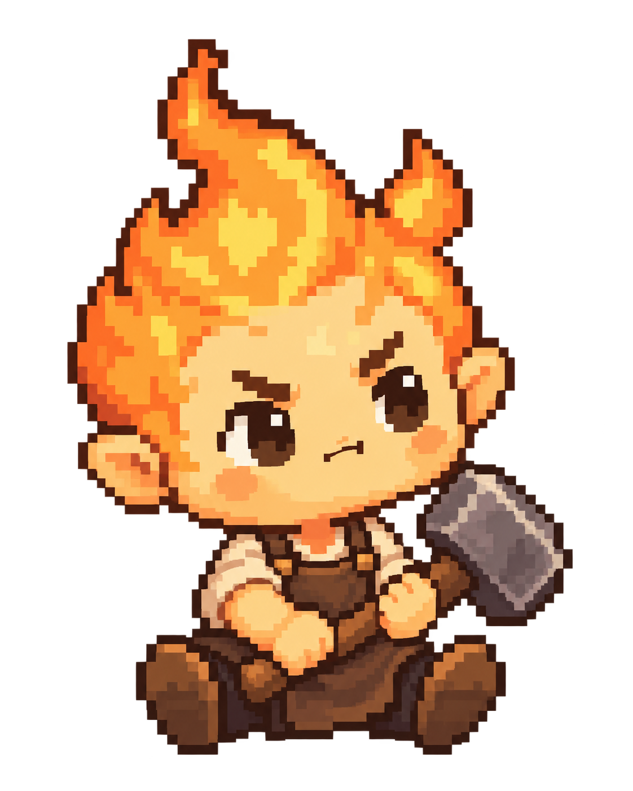
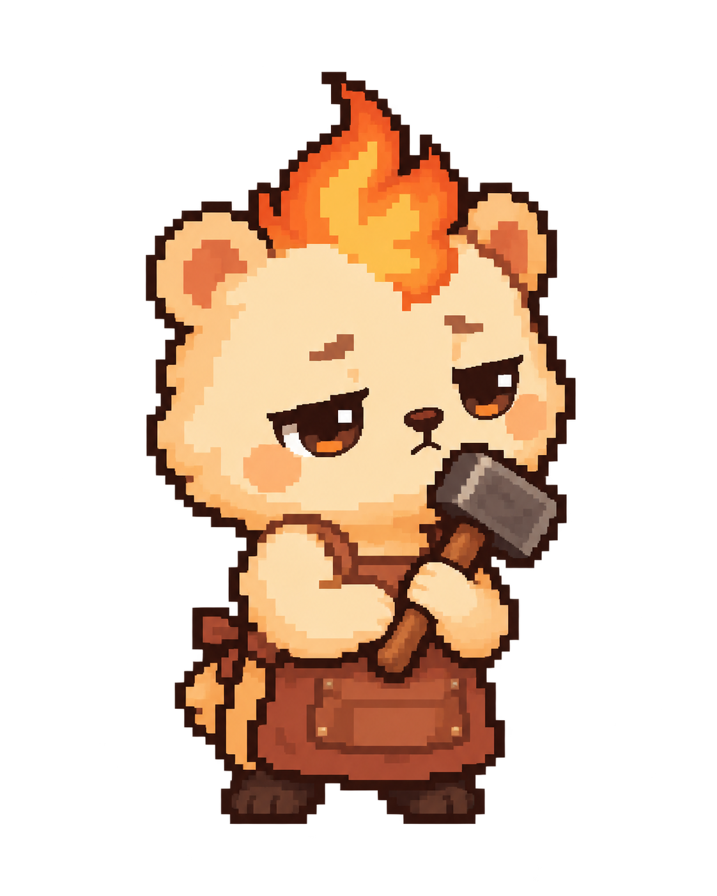
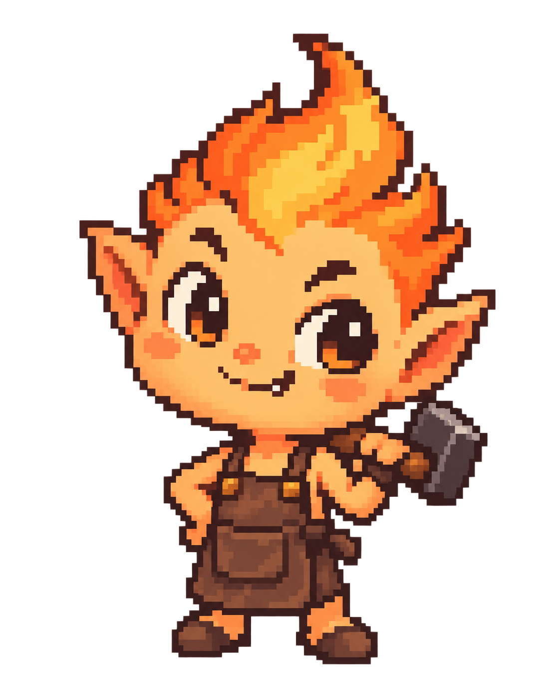

곁에 두고 싶은 꼬마 대장장이.
불꽃 머리, 짧은 손발, 작은 앞치마. 얼굴과 성격이 다른 세 캐릭터입니다.

A. 뚝딱이
작아도 고집은 센 수습 대장장이.
큰 망치를 잡고 앉아 다음 일을 기다립니다.

B. 꾸벅이
평소에는 졸려 보여도 할 일은 하는 성격.
둥근 얼굴과 짧은 팔다리로 포근함을 줍니다.

C. 톡이
자기가 만든 걸 자랑하고 싶은 꼬마 도깨비.
장난스러운 얼굴과 당당한 자세가 특징입니다.
이름은 임시입니다. 지금은 얼굴·비율·성격을 선택하는 정적 시안이며, 선택 후 눈 깜박임·망치질·꾸벅임 등의 동작을 제작합니다.